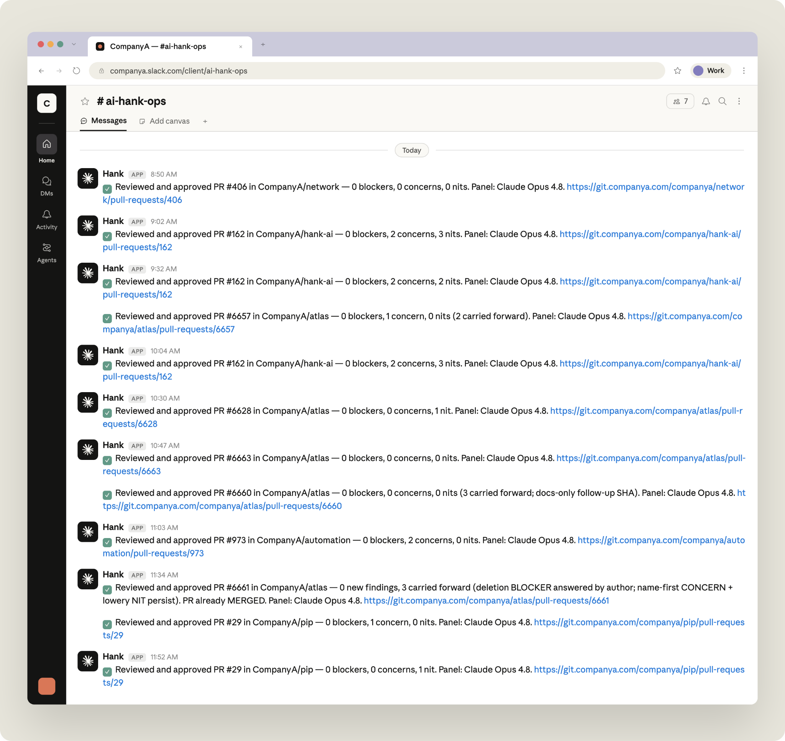
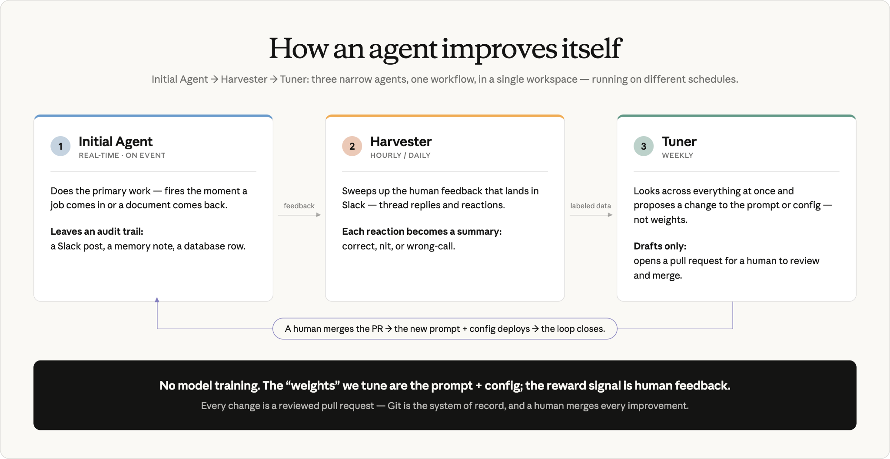

흩어진 실험을 관리되는 에이전트 함대로. ABC Legal은 Claude로 조직의 AI 도입 방식을 산발적 실험에서 버전 관리·관측·감사가 되는 전문 에이전트 무리로 바꿨다.
ABC Legal은 미국의 법률 문서 송달(legal document delivery) 회사다. 이 회사의 CTO 브랜던 풀러(Brandon Fuller)는 올해 초 Claude Enterprise를 전 직원 1,100명에게 깔았다. 그러자 곧바로 무언가가 맞아떨어졌다.
송달(service of process), 전자제출(eFiling), 대리 출석 운영(appearance counsel operations) 같은 현업 부서는 물론이고 마케팅·컴플라이언스·재무까지, 회사 곳곳의 팀이 시키지도 않았는데 스스로 자동화를 만들기 시작했다.
"사용자들이 정말로 몰려들었습니다. 커넥터와 도구가 얼마나 쓰기 쉬운지 보고 나니까, 갑자기 조직 전체에서 사람들이 늘 하루를 잡아먹던 업무를 자동화하고 있더군요." — 브랜던 풀러
어느 CTO나 바랄 법한 도입 양상이었다. 하지만 풀러는 여기서 한 발 더 갈 여지를 봤다. 버전이 관리되고, 관측 가능하며, 항상 켜져 있는 AI 에이전트 함대를 회사가 운영할 수 있다면?
결국 문제는 인프라였다. 초기 에이전트들은 만든 사람이 놔둔 자리에 그대로 살고 있었다. 개인 데스크톱의 예약 작업(scheduled task)이 전부였다. 이걸 개인 PC 밖으로 꺼내야 사람이 지켜보지 않아도 돌아가고, 무엇이 만들어졌고 비용이 얼마나 들었으며 어젯밤에 제대로 돌았는지를 풀러가 한 화면에서 볼 수 있었다.
그래서 그는 Claude Managed Agents를 도입했다. 공통 배포 구조 하나, 공유 워크스페이스, 감사와 과금이 한곳에서 보이는 단일 표면, 그리고 누군가의 노트북이 아니라 클라우드에서 상시 돌아가는 에이전트.
2026년 7월 기준으로 풀러와 ABC Legal 팀이 집계한 수치는 이렇다.
여기까지 어떻게 왔고, 그 과정에서 무엇을 배웠는지가 이 글의 내용이다.
Claude Managed Agents를 처음 배포할 때, 풀러는 팀에 모든 에이전트를 코드로 정의하게 했다. 그는 이것이 에이전트에게 자연스러운 형태라고 본다. 그의 설명을 옮기면, 에이전트란 결국 "프롬프트 더하기 설정"이라는 구조화된 텍스트일 뿐이고, 텍스트인 이상 저장소(repository)에 들어가 회사 전체가 보고 리뷰하고 개선할 수 있다는 것이다.
그래서 에이전트의 프롬프트, 도구 목록, 스케줄, 크리덴셜, 메모리가 전부 설정 파일로 들어가고, 그 파일은 회사 소프트웨어와 나란히 git 저장소에 놓인다. 에이전트에 관한 어떤 것도 누군가 승인한 풀 리퀘스트(PR) 없이는 바뀌지 않는다. 그 결과 모든 에이전트가 버전 이력, 코드 리뷰, 롤백, 감사 추적(audit trail)을 공짜로 얻는다.
풀러는 일주일을 들여 스타터 킷을 만들었다. 전용 git 저장소에 템플릿 두 개가 들어 있다.
각 에이전트는 자기 폴더 안에 표준 구조로 산다. JSON 설정 파일, Markdown으로 쓴 시스템 프롬프트, 배포 스크립트, 운영 문서. 변경을 main 브랜치에 머지하면 에이전트가 자동으로 배포된다.
중요한 건 빌더가 소프트웨어를 짤 필요가 전혀 없다는 점이다. 저장소를 클론하고, 스타터 템플릿을 복사하고, 에이전트가 무슨 일을 해야 하는지 Claude Code에 말하면, 설정·프롬프트·크리덴셜 저장소·메모리까지 에이전트에 필요한 것이 전부 돌아온다.
풀러는 회사의 15인 운영위원회를 모았다. 재무·마케팅·운영·개발에서 뽑힌 사람들이었고, 그중 소프트웨어 개발자는 한 명도 없었다. 그들에게 저장소를 클론하게 하고 Claude Code로 Managed Agents를 직접 만들게 했다.
목표는 비개발자도 프로덕션 에이전트를 스스로 만들 수 있다는 걸 증명하는 것이었다. 모든 에이전트가 개발팀을 거쳐야 한다면, 그 병목이 회사 전체가 움직일 수 있는 속도의 상한이 되기 때문이다. 이게 안전할 수 있었던 이유는 그들이 소프트웨어를 짜고 있던 게 아니기 때문이다. 그들은 설정과 프롬프트를 채워 넣고 있었고, 런타임은 Managed Agents가 대줬다.
"PR이 뭔지 설명해줘야 했어요. (비개발 직원) 상당수가 그게 달리기, 그러니까 자기 최고 기록(personal record) 같은 걸 뜻하는 줄 알았거든요. 그런데 지금은 그 사람들이 풀 리퀘스트를 올리고 서로에게 보내고 있습니다." — 브랜던 풀러
일주일 안에 15명 전원이 동작하는 에이전트를 갖게 됐다. 그 빌더들이 각자 팀으로 돌아가 다른 사람들을 가르쳤다. 한 달 안에 ABC Legal 전역에서 대략 50개 이상의 에이전트가 돌아가고 있었다. 에이전트마다 이름이 있고, 주인이 있고, 맡은 일이 하나씩 있다.
ABC Legal은 이제 법률 문서 제출 절차와 그 주변 운영의 거의 모든 단계에 에이전트를 두고 있다.
코드베이스 4개의 모든 풀 리퀘스트를 리뷰한다. 여러 모델을 동원한 다중 모델 분석으로 보안 버그, 성능 퇴행(performance regression), 실수로 커밋된 크리덴셜을 잡아낸다. 이제 엔지니어들은 이 에이전트의 리뷰를 기다렸다가 머지한다.
어카운트 매니저가 매주 손으로 하던 잡무를 넘겨받았다. ABC Legal은 EvidenceChain.com이라는 자체 사이트를 운영하는데, 법원·원고·피고가 현장에서 완료된 송달의 기록을 조회하는 곳이다. 송달인이 누구였는지, 언제 시도했는지, 문서 전달 사진까지 들어 있다. 한 고객이 여기서 특정 기록을 계속 뽑아달라고 요청했다.
지금은 에이전트가 조건에 맞는 작업 건의 DB 리포트를 뽑고, Managed Agent에 내장된 브라우저로 PDF를 하나씩 받아, 매일 고객의 FTP 서버로 전달한다. 이걸 만든 어카운트 매니저는 그 전까지 무언가를 자동화해본 적이 한 번도 없었고, Claude Code에 설명하는 방식으로 약 한 시간 만에 만들었다.
법원이 제출을 반려하면 자동으로 발동한다. 작업 상세를 읽고, 해당 법원의 규칙을 확인해, 1분 남짓 만에 진단 결과를 Slack에 올린다. 예전에는 직원 하루의 몇 시간을 잡아먹던 일이다.
들어오는 모든 작업을 법원 기준으로 대조한다. 브라우저로 법원 웹사이트를 돌아다니며 심리나 사건이 제대로 접수됐는지, 그리고 명시된 날짜에 실제로 열리는지 확인하고, 확인한 내용에 따라 작업을 조정한다. 관할(jurisdiction), 법원, 공소시효/제척기간(statute of limitations) 기한을 함께 표시해준다.
심리를 대리할 변호사를 확보하기 위해 변호사 네트워크를 돌린다. 가능 여부를 확인하고, 이메일을 보내고, 일정과 단가에 대한 회신을 읽어서, 코디네이터가 대리 확정만 하면 되게 만들어준다.
ABC Legal 운영 백로그의 티어1 계층, 즉 사람이라면 반복적으로 처리했을 1차 훑기를 담당한다. 단계별 일일 아웃리치 메시지를 초안으로 써두면 사람이 승인한다.
ABC Legal의 에이전트들은 사람의 감독 아래 일한다. 자기가 한 일이나 추천안을 Slack에 올리고, 사람들은 스레드로 답하거나 이모지로 반응한다.

풀러는 그 반응 데이터 전부가 버려지고 있는 학습 신호라고 봤다. 다만 모든 에이전트에 이 신호가 필요한 건 아니다. 함대의 대부분은 아무도 점수를 매기지 않는 단일 작업 실행기이고, 그런 것들은 혼자 일한다.
점수가 매겨지는 피드백을 실제로 모으는 에이전트에 대해서는 ABC Legal이 3역할 아키텍처를 쓴다. 워크스페이스·환경·크리덴셜 저장소는 공유하되 서로 다른 스케줄로 도는 별개의 에이전트들이다. 이 패턴은 Slack의 메시지를 버전이 관리되고 사람이 승인한 에이전트 변경으로 바꿔놓는다.

한 가지 사례가 풀러가 만든 "deliveries-as-code"다. 일감이 어떻게 라우팅되는지를 튜닝하는 에이전틱 시스템으로, ABC Legal의 50인 규모 자매회사 Docketly에서 시작됐다.
Docketly는 일을 딜리버리(delivery) 단위로 조직하고, 딜리버리마다 라우팅과 처리에 대한 자체 룰셋이 있다. 그 145개 남짓의 룰셋이 관리자 화면의 레코드가 아니라 git의 YAML 파일 하나씩으로 존재한다. 그래서 딜리버리를 튜닝한다는 건 파일을 고치고 풀 리퀘스트를 여는 일이 된다.
이 루프는 에이전트 넷으로 구성된다. 하나는 주간 판정을 Slack에 올리고, Harvester가 사람 피드백을 바탕으로 반응을 레이블로 바꾸며, Tuner가 YAML에 풀 리퀘스트를 열고, 네 번째 에이전트가 머지된 설정을 운영 DB로 밀어 넣는다. 그 네 번째 에이전트는 사람이 이미 검토하고 승인한 것만 실행한다.
실제로는, 잘못 라우팅된 딜리버리를 지적하는 이모지 반응 하나가 그 주 안에 해당 딜리버리의 라우팅 규칙에 머지된 변경으로 이어질 수 있다. 루프에서 수동 단계는 리뷰 하나뿐이다.
풀러는 조직의 에이전틱 하네스(agentic harness)를 정하기 전에 여러 프레임워크를 평가했다. 기준은 구체적이었다. 버전 관리, 관측 가능한 세션, 워크스페이스 단위 과금, 모델 선택, 메모리 프리미티브, MCP 연결, 그리고 무엇보다 돌봐야 할 인프라가 없을 것.
플랫폼의 책임 분담이 풀러가 운영하고 싶은 방식과 깔끔하게 맞아떨어졌다.
규모가 커지면서 특히 중요해진 기능이 몇 가지 있다.
ABC Legal은 AI 지출을 1달러 단위까지 추적한다. 벤더별, 도구별, 팀별, 유스케이스별로 쪼개서 본다. 봄에 에이전트 함대가 라이브로 올라오면서 지출은 올라갔고, 7월에는 사용량이 계속 늘어나는 와중에 지출이 떨어지기 시작했다. 아래에 설명한 효율화 작업의 결과다. 많은 에이전트가 커버하는 업무에서 비용이 약 50% 줄었고, 전 부서 약 310명이 Claude를 쓴다.
비용에 대한 이 회사의 접근은 의도적이다. 수익이 측정되는 수직적·운영적 도구와 에이전트 쪽으로 지출을 밀고, 수평적인 채팅·아이디어 발상 용도는 넓게 열어두되 비용은 통제한다.
대부분의 에이전트는 사람이 개입한 상태로 시작한다. 에이전트가 작업이나 티켓을 보고 추천안을 내면, 무언가 실행되기 전에 사람이 검토한다. 그 추천안은 작업 건에 저장돼 배너로 노출되므로 담당자가 자기 업무 흐름 안에서 수락하거나 거절할 수 있고, 아니면 Slack 채널에 올라가 사람들이 스레드로 답한다.
그 응답들이 좋은 판단과 나쁜 판단에 레이블이 붙은 데이터셋을 쌓아 올린다. 이 데이터셋이 harvester·tuner 루프를 먹이고, 팀이 평가(eval)를 작성해 프런티어 모델들 사이에서 에이전트를 벤치마킹할 수 있게 해준다.
특정 작업에서 에이전트가 사람만큼 하거나 더 낫다는 게 입증되면, 그때 자동화 모드로 전환돼 스스로 행동한다. 그리고 그 후에도 같은 측정 프레임워크 안에 남아서 성능 변화가 없는지 계속 감시받는다.
ABC Legal이 추적하는 지표는 효율 비율(efficiency ratio)이다. 에이전트가 만들어내는 가치를, 그것을 돌리는 비용에 견줘 잰다. 모든 Managed Agent는 실행할 때마다 자기 가치를 시간과 달러 단위로 데이터 웨어하우스에 보고한다.
에이전트는 J-커브를 그린다. 새것이고 더 큰 모델로 돌 때는 물밑(적자)에서 시작하는 경우가 많다가, 팀이 평가를 쓰고 더 싸고 빠른 모델로 옮기고 토큰을 다듬으면서 흑자로 뒤집힌다.
AI를, 구체적으로는 Claude Managed Agents를 배포해본 경험에서 풀러가 도달한 몇 가지 작업 원칙이다.
ABC Legal의 에이전트 함대는 계속 늘고 있다. 진행 중인 프로젝트로는 송달 사진 리뷰어, PagerDuty 트리아지 에이전트, 일일 KPI 다이제스트, 그리고 기존 에이전트로 Tuner 루프를 확장하는 작업이 있다.
팀은 또한 "X-as-code" 후보를 더 찾고 있다. 알림 템플릿, 이벤트 라우팅 규칙, 배차 로직처럼 저장소로 옮겨놓으면 에이전트가 읽고 추론하고 개선을 제안할 수 있는 것들이다.
"우리가 원하는 건 스스로 굴러가는 사업을 AI가 떠받치고, 직원들은 그 방향을 잡는 데 자유로워지는 겁니다." — 브랜던 풀러
Claude Managed Agents에 대해 더 알아보기.